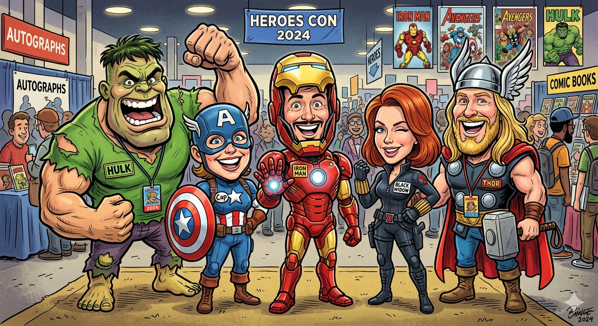

Vingadores impedem invasão temporal em Nova York

Após horas de confronto, os Vingadores conseguiram conter uma ameaça multiversal liderada por variantes de Kang. Autoridades confirmam que a estabilidade temporal foi restaurada e a cidade já inicia os trabalhos de reconstrução.